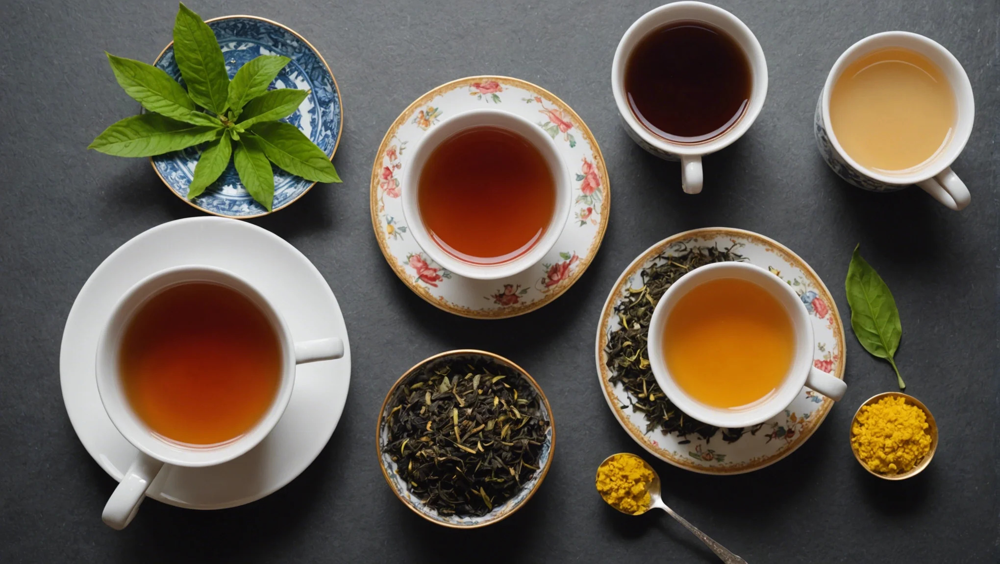

Полный гайд по завариванию чая: температура, время и посуда
Рассказываем, как правильно заваривать зелёный, чёрный, белый чай и улун. Какую воду использовать, какой посудой пользоваться и сколько времени настаивать каждый сорт. Бонус: таблица температур для всех видов чая.
Правильное заваривание чая — это целое искусство. Всё начинается с выбора воды: идеальна мягкая родниковая вода, но подойдёт и фильтрованная. Жёсткая вода из-под крана испортит вкус даже самого дорогого чая.
Зелёный чай: температура 70–80°C, настаивать 1–3 минуты. Слишком горячая вода сделает его горьким. Используйте стеклянную или керамическую посуду.
Чёрный чай: температура 90–95°C, настаивать 3–5 минут. Идеален в фарфоровом чайнике. Добавьте молоко или лимон по вкусу.
Улун: температура 85–90°C, настаивать 2–4 минуты. Улуны раскрываются постепенно — один и тот же лист можно заваривать до 5–7 раз, каждый раз получая новый оттенок вкуса.
Белый чай: температура 75–85°C, настаивать 4–5 минут. Самый нежный из всех — не используйте кипяток, дайте воде остыть пару минут после закипания.
Пуэр: температура 95–100°C, настаивать 3–4 минуты. Выдержанный пуэр любит крутой кипяток и глиняную посуду. Перед завариванием обязательно промойте лист горячей водой.
И главное правило: не передерживайте чай! Лучше заварить новый раз, чем получить горький напиток. Экспериментируйте с температурой и временем, чтобы найти свой идеальный вкус.